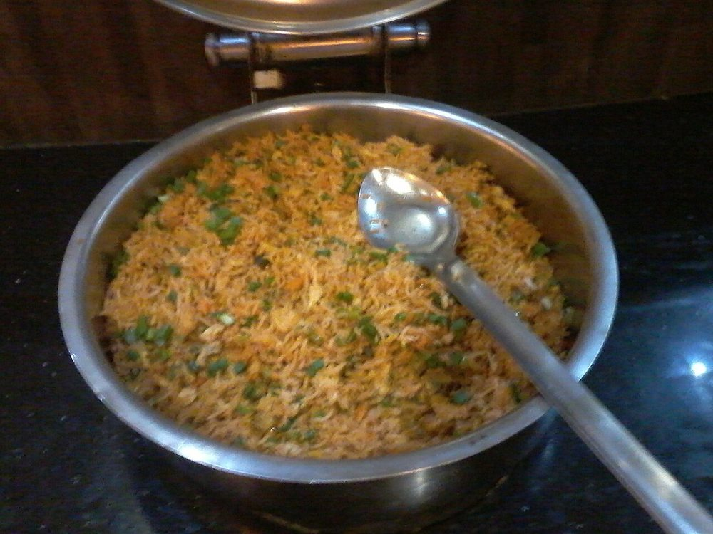

Kolambi Bhaat
konkani prawn rice, red with coconut masala and eaten straight from the pot

Contains: crustacean shellfish
Ingredients
Quantities for 4.
- 300g, medium, shelled and deveined, tails on Prawns
- 1.5 cups (300g), washed and drained Rice
- 1/2 cup, fresh grated Coconut
- 3 tbsp, grated Dried Coconutroasted, for depth
- 2 medium: 1 for the paste, 1 sliced Onion
- 8 cloves Garlic
- 2cm piece Ginger
- 3, slit Green Chilli
- 1/2 cup, chopped, stems included Coriander Leaves
- 2 tsp Kashmiri Chillithe malvani red comes from here
- 1 tbsp Coriander Powder
- 1 tsp Cumin Powder
- 1 tsp, coarsely cracked Black Pepper
- 3/4 tsp Turmeric
- 3 Clovesoptional
- 2cm piece Cinnamonoptional
- 3 tbsp Coconut Oilor groundnut oil
- 3 petals Kokumor a squeeze of lemon at the endoptional
- 2.75 cups, hot Water
- 1, cut in wedges Lemonto serveoptional
- to taste Salt
Cookware
stovetop, kadhai, blender
Checked against the ingredient list for ten allergens: milk, egg, fish, crustaceans, tree nuts, peanuts, sesame, mustard, soy and gluten. Brands vary, so read the label on anything new to you.
Before you start
- Marinate the prawns with 1/2 tsp turmeric, 1/2 tsp salt and a squeeze of lemon for 15 minutes while you make the paste.
- Drain the washed rice thoroughly, at least 20 minutes, or the bhaat will turn to porridge.
- Soak the kokum in 3 tbsp warm water for 10 minutes.
Method
- Toss the prawns with turmeric, salt and lemon and set aside 15 minutes, refrigerated.
- Dry-roast the dried coconut over low heat for 3 minutes until it smells toasted, then grind it with the fresh coconut, one chopped onion, garlic, ginger, half the coriander leaves and 4 tbsp water to a thick, smooth paste.Grind it finer than feels necessary. Any grittiness stays in the finished rice.
- Heat the coconut oil in a heavy pan. Add cloves and cinnamon, then the sliced onion and green chillies, and fry 6 minutes until the onion is soft and browning at the tips.
- Add the ground paste and cook on medium 8-10 minutes, stirring, until it darkens and oil beads at the edges.This is the step people cut short. Raw coconut paste tastes chalky; wait for the oil to separate.
- Stir in the kashmiri chilli, coriander powder, cumin powder, black pepper and remaining turmeric and fry 1 minute.
- Add the prawns and cook 2 minutes only, until they just turn opaque and curl. Lift them out onto a plate.Prawns cooked twice must be barely cooked the first time, or they finish rubbery.
- Add the drained rice to the masala and fold 3 minutes until each grain is coated and glossy.
- Pour in the hot water with the kokum and its soaking liquid, and salt. Bring to a boil, cover and cook on the lowest heat 12 minutes.
- Scatter the prawns over the rice, cover again and cook 3 more minutes, then rest off the heat 10 minutes.
- Fork through the remaining coriander and serve with lemon wedges.
Safe temperatures: Prawns, crab and squid are done when the flesh is opaque and pearly right through. Reheat leftovers to 74°C / 165°F. FoodSafety.gov
Storage
Best the day it is made. Refrigerate up to 24 hours and reheat covered on low with a splash of water; the prawns will firm up slightly on reheating.
Nutrition Medium estimate
High protein: 23 g a serving, 16% of the calories
| Per serving420 g | Per 100 g | |
|---|---|---|
| Calories | 587 kcal | 140 kcal |
| Protein | 23.0 g | 6 g |
| Carbohydrate | 75.2 g | 18 g |
| of which sugars | 4.8 g | 1 g |
| Fibre | 5.4 g | 1 g |
| Fat | 22.3 g | 5 g |
| of which saturated | 18.1 g | 4 g |
| of which unsaturated | 2.4 g | 1 g |
Ingredients given to taste count as zero, so the real figures run a little higher. Nearest database match used for kokum. Estimated from raw ingredients using USDA FoodData Central.
More like this: Gluten-free Indian recipes · Dairy-free Indian recipes · Maharashtrian recipes
Times, yields, allergens and nutrition are guidance. Use your own judgement on doneness and on storing. More in About.